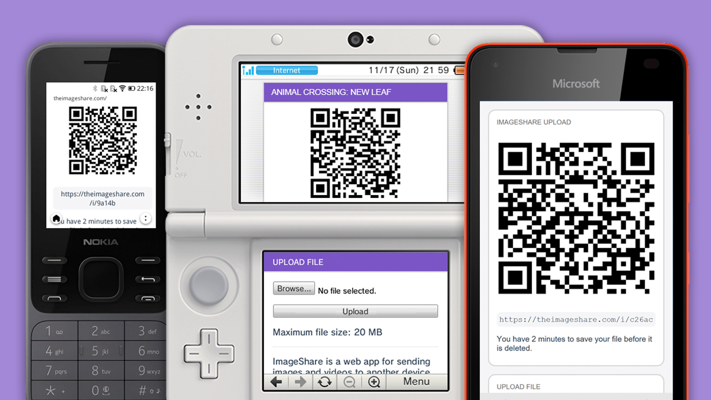
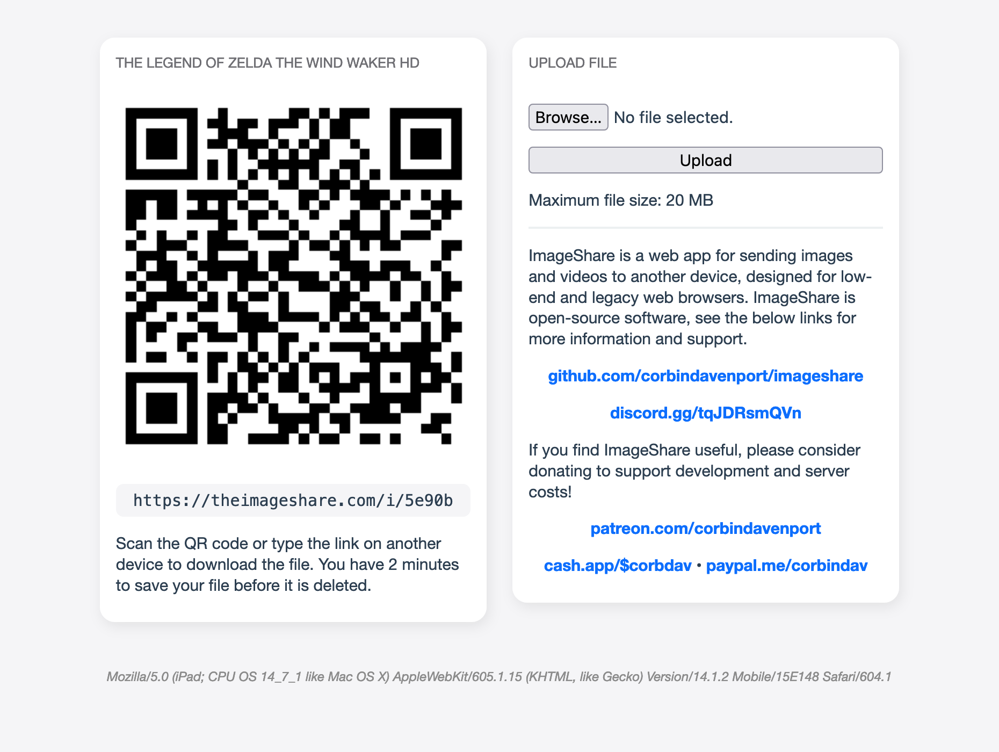
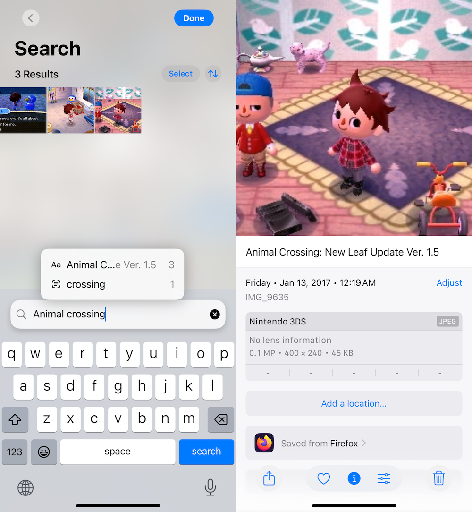
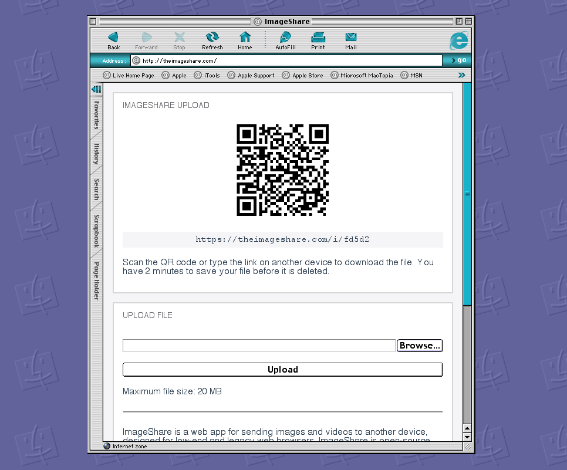
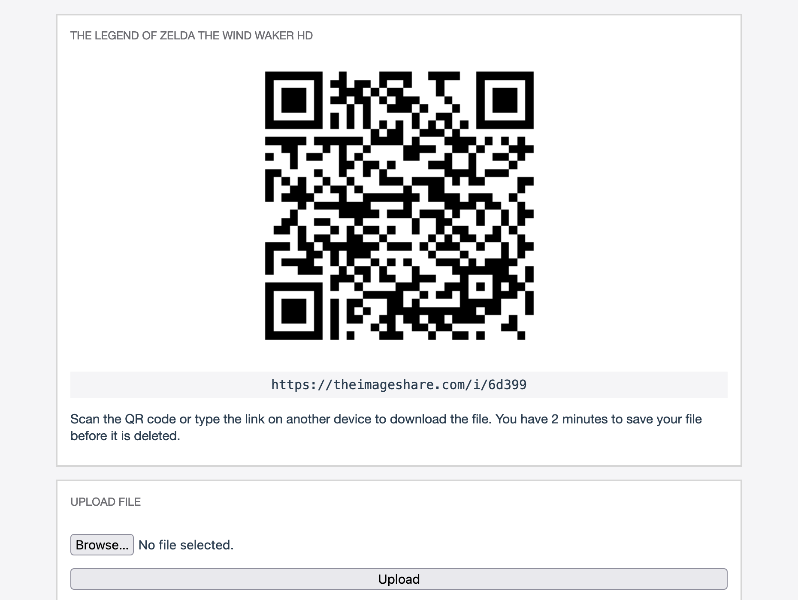
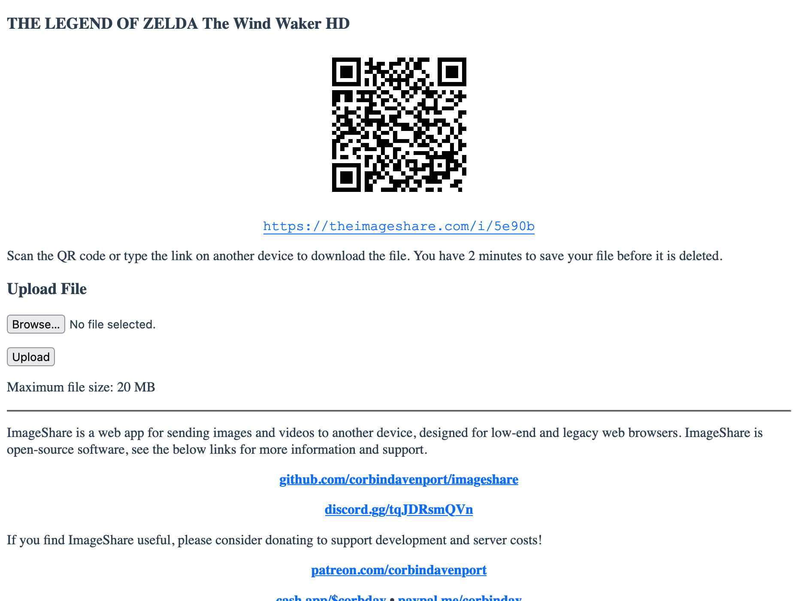

The new ImageShare is the best way to share images and videos from low-end and legacy devices. It works on nearly every web browser that supports file uploads, and it has additional features for the Nintendo 3DS and Wii U.
I made the first version of ImageShare in 2020, as an alternative to Nintendo’s Image Share service for the Nintendo 3DS, and I eventually added better mobile and desktop support. Trying to keep it functional for old browsers, like the one on the 3DS, has been difficult and required numerous rewrites and quick-fix API migrations. This new v3.0 update is nearly a complete rewrite, intended to keep the web app functional for the foreseeable future.
ImageShare has now outlived the Nintendo-operated service that inspired it, and I’d like to continue that winning streak. At the same time, I hope this will be a useful tool for any old devices with a functional web browser, not just game consoles.
ImageShare allows you to send any image or video file to another device. You can visit theimageshare.com in a web browser, select a file, then just press the Upload button. The uploaded file can be downloaded on another device by scanning the provided QR code, or you can type the provided shortlink in a web browser. The file is deleted from the server after a few minutes.

The file hosting is now handled entirely by the ImageShare server, instead of using Imgur or ImgBB, like earlier versions. The ability to upload files directly to popular hosting services with permanent hosting was great, but the Nintendo 3DS and other supported platforms can’t authenticate with sites like Imgur and ImgBB anymore, and unauthenticated uploads are either rate-limited or impractical. The QR codes are also now generated by ImageShare, instead of using a third-party API.
Thanks to this new architecture, ImageShare now supports most media formats, not just images. Scanning the QR code or visiting the link on another device starts the download immediately, as long as the browser allows it, saving you the step of right-clicking or holding down on the file to start the download.
ImageShare is also built with self-hosting in mind: it’s completely open-source, and you can run it on any PC, home server, or production web server with Docker. The new version is even easier to set up, since API keys for Imgur or ImgBB aren’t needed anymore.
ImageShare is still designed to work with unmodified Nintendo 3DS and Nintendo Wii U game consoles, using their built-in web browsers. Full support for the Wii U is new in this update.
When you upload a game screenshot or other saved image from the 3DS or Wii U, the game’s title is automatically added to the image’s EXIF metadata. The device model in the metadata is also saved as ‘Nintendo 3DS’ or ‘Nintendo Wii U’, and the device make is saved as ‘Nintendo’. That data makes the images searchable by platform and game title when they are imported into most photo library apps and services. For example, after copying a few Animal Crossing: New Leaf screenshots to my iPhone, I can search “animal crossing” in the Photos app later to see all of them.

This functionality is possible because images saved on Nintendo consoles contain a partial ID for the game they originated from. That ID is stored in the file name on Wii U consoles, and on 3DS consoles, it’s in the EXIF metadata. ImageShare extracts that game ID, matches it against hax0kartik’s 3dsdb and WiiUBrew’s title database, and then saves the matching game title back to the file before the file is downloaded.
Now that Nintendo’s own media upload service for the 3DS and Wii U is dead, ImageShare is (probably) the best way to transfer images and videos from those consoles to a phone or other modern device, where they can be easily backed up and shared online. No homebrew or taking out SD cards required.
ImageShare works on nearly every mobile and desktop web browser. I’ve tested it across modern browsers, older versions of Safari and Firefox, KaiOS feature phones, Windows Phone 10, and several versions of Internet Explorer and Netscape. The below image shows ImageShare working perfectly on Internet Explorer 5.0 for Mac, which was released 24 years ago. You’ve heard of progressive enhancement, now get ready for regressive enhancement.

Modern desktop and mobile web browsers get the fancy responsive layout, with drop shadows, two columns on larger screens, and automatic dark mode support. This works for most browsers with CSS3 media queries support, mostly in the 2010s and later, and it can shrink down to a minimal interface used for the Nintendo 3DS and other small mobile screens.
Older web browsers get a single-column layout, and some effects like rounded corners and drop shadows might not work. This is what you’ll get on old versions of Safari, Internet Explorer, and Firefox from around the early-2000s to early-2010s.

Finally, really old web browsers like Netscape 4.x get the plain HTML layout. ImageShare uses a fun web dev trick to prevent browsers with early and incomplete CSS1 implementations from trying (and failing) to load the more complex layout.

ImageShare still doesn’t use any client-side JavaScript (except to show a loading spinner after you click the Upload button), and HTTPS is optional, so it’s fast and looks great on many devices. The minimum requirement is just file upload support in the browser. For example, ImageShare doesn’t work on some old iPhone and iPod Touch models, because mobile Safari didn’t allow file uploads until iOS 6. The QR code also won’t work on browsers that don’t support PNG images, but most of the browsers affected by that also don’t allow file uploads.
The new ImageShare is a near-complete rewrite, replacing the original PHP codebase with Node.js. I have never really liked working in PHP, so when faced with the problem of having to rework the app anyway, I figured now was a good time to finally change the technical foundation.
Node’s great ecosystem of libraries made the transition easy, and it allowed me to quickly add features that had been on the to-do list for ages. ImageShare is using Express and Multer to serve the web pages (which are dynamically generated) and static resources, as well as handling image uploads and downloads. The QR codes are created with the excellent node-qrcode library, and exifreader is used for checking image metadata. The only core functionality that isn’t handled in the server is writing game titles to image EXIF metadata. For that, the server spawns an ExifTool process.
ImageShare was already a multi-container Docker Compose application, with the app running in one container, Certbot from Let’s Encrypt in another container for generating and renewing the SSL certificate, and Nginx in another container for the reverse proxy. With this update, the PHP server was swapped for a Node server, and the rest remained relatively untouched. Hooray for modularity!
You can use the new ImageShare by visiting theimageshare.com in your web browser, and the source code is available on GitHub. You can also bookmark it for easy access in the future. I’m hoping this will remain a valuable and useful service for years to come.